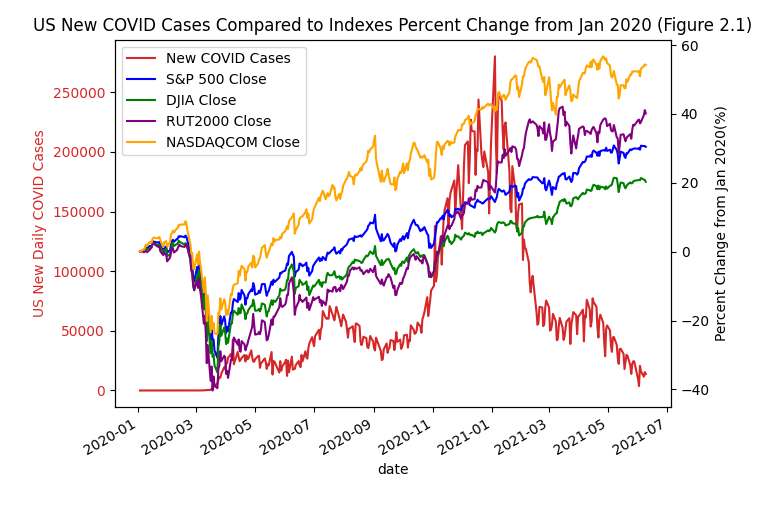
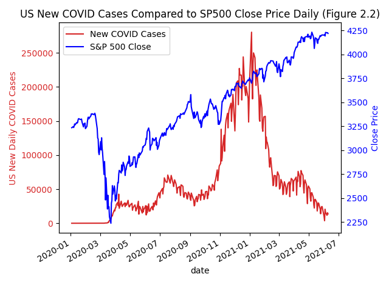
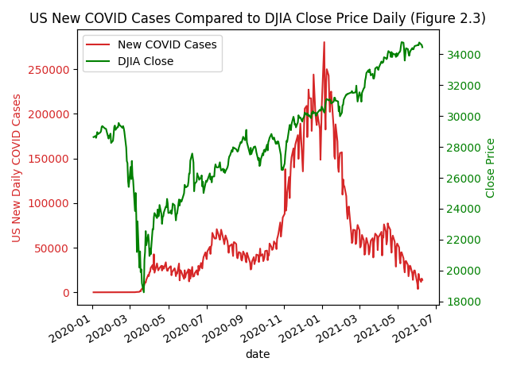
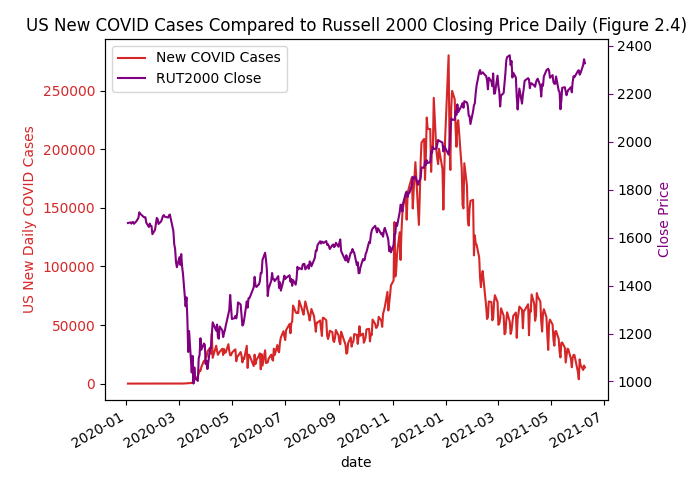
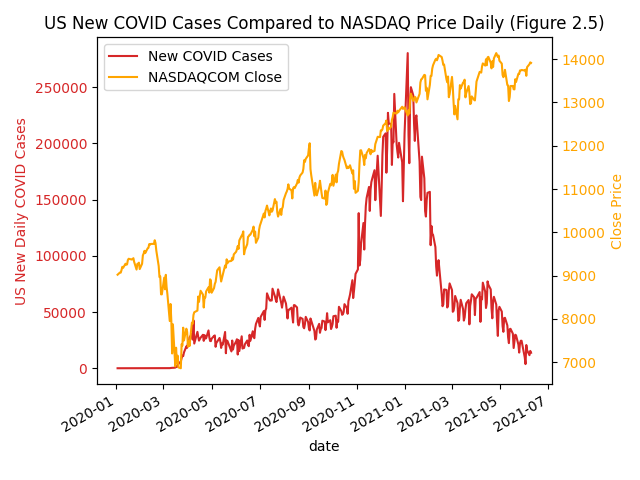

COVID Cases vs. Stock Indexes

S&P 500

DJIA

Russell 2000

NASDAQCOM

Questions: When studying this data I wanted to take a look at the economic effects of the number of new COVID cases in the US each day, through comparing the case count to the closing price of Various Indexes.
Findings
I found that although there was a significant drop in all of the stock indexes when COVID cases first began to climb in the US in mid February 2020, the stock market recovery was V-shaped with stocks starting a fairly consistent climb in late March 2020. I was pretty surprised to see that the stock indexes continued climbing as cases continously went up. For instance, when new COVID cases hit their peak on 01-10-2021 with 312,247 positive daily test results, there was no market sell-off as a result of the news. I suspect that the drop in February 2020 was a reflection on the US-wide panic when COVID cases first began to rise in the country (see
Search Trends). However, once the market was able to digest the potential impacts of the pandemic (including both the economic fall out as well as the potential for new profit streams for tech companies), from that point on, we entered a bull market. This has caused indexes to recover to pre-pandemic levels within 6 months of the initial sell off and climb to new all time highs. This reflects the fact that the stock market is not an accurate representation of the economic and societal conditions of a nation, but rather a reflection of economists'/traders' views of future corporate earnings. We see this quite clearly when we take a look at the unemployment rate (see
Unemployment Rate), which has certainly seen improvements from April 2020 levels but has not yet recovered to its pre-pandemic lows. To my surprise, all of the indexes had similar trends throughout the virus (seen in Figure 2.1) even considering the varying companies they include. However, as I expected, the Russell 2000 (a small cap index) saw a steeper decline (~40% from Jan 2020 levels) during the market sell off in February 2020. Through my research I was unable to answer the question of
why the market only had one large and evident dip when the virus first hit, but climbed to all time highs while the pandemic was at its worst. Overall, I think it would be fair to say that COVID hit mom and pop shops hardest and these businesses are signficantly underrepresented in the data.